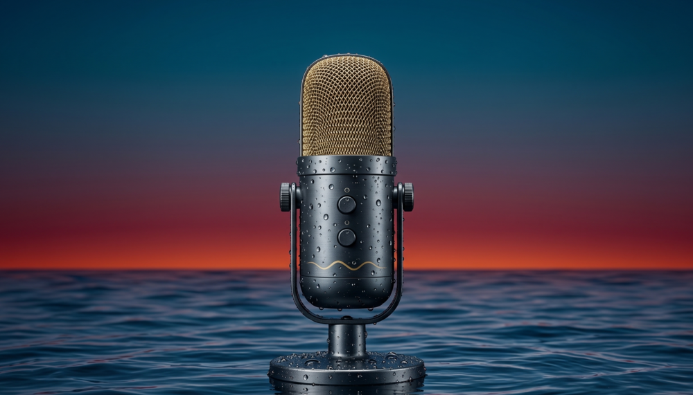

EP 02The port that moved faster by standing still: automation paradoxes at India's largest container terminal
Why the terminals that invested least in automation often outperformed those that invested most — and what that tells us about how to think about the next decade of port technology.
EP 03
Methanol, ammonia, or hydrogen: how do you bet on the right fuel when the rules aren't written yet?
A frank conversation about the gap between IMO's ambitions and the commercial reality of ordering ships today — and why the safest bet might be no bet at all.
EP 04
The seafarer's mind: two decades of welfare work and what the industry still won't talk about
The stories welfare workers see and never share publicly — and why the industry's mental health conversation is still missing the people who need it most.
EP 05
Crewing the future: where India's maritime workforce strategy is heading next
A wide-ranging look at how India plans to grow from a major supplier of seafarers into a global maritime talent hub — and the gaps that still stand in the way.